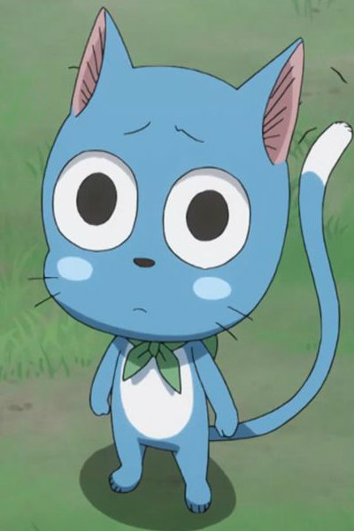
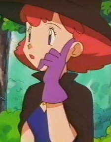

|
Alphonse Elric |
- Fullmetal Alchemist
- Fullmetal Alchemist: The Conqueror of Shamballa
- Fullmetal Alchemist: Reflections
- Fullmetal Alchemist: Premium Collection
- Fullmetal Alchemist: Brotherhood
- Fullmetal Alchemist: Brotherhood Specials
- Fullmetal Alchemist: Brotherhood - 4-Koma Theater
- Fullmetal Alchemist: The Sacred Star of Milos
|
Alphonse Elric is a human child who lost his body due to failed alchemical transmutation. Al's soul later transfer to a suit of armor thanks to his brother, Elric. Al is kindhearted, notably compassionate and patient to a fault. He is out of protective selfness for his loved ones. |
 |
Catherine Elle Armstrong |
- Fullmetal Alchemist
- Fullmetal Alchemist: Brotherhood
|
Catherine Elle Armstrong is the younger sibling of Major Alex Armstrong. She can lift pianos and wants a boyfriend who is strong as her brother. Catherine has a shy nature. |
 |
Celebi |
- Pokemon Movie 13: Zoroark The Master of Illusions
|
Celebi is a mythical from the Johto region. It serves as the guardian of Ilex Forest. It is able to travel through time and exist simultaneously throughtout time, and plant life flourishes wherever it has been. Celebi shows itself in areas and times of peace. |
|  |
Happy |
- Fairy Tail
- Fairy Tail OVA
- Fairy Tail: Houou no Miko Prologue
- Fairy Tail the Movie: Phoenix Priestess
- Fairy Tail x Rave Master
- Fairy Tail (2014)
- Fairy Tail OVA (2016)
- Fairy Tail Movie 2: Dragon Cry
|
Happy is a magical talking cat. He has the ability to fly and speak. He is very close to Natsu since Happy hatched. Happy has a cheerful nature. He is constantlty is smiling even in danger. |
 |
Hoopa |
- Pokemon XY
- Pokemon Movie 18: Hoopa and The Clash of Ages
|
Hoopa is a Mythical Pokemon from the Kalos region. Hoopa has another from called Unbound which is it true form. Hoopa has the power to transport things using teleportation, which warps space. Rie Kugimiya voiced Hoopa Confined. |
|  |
Lily |
|
Lily is a magician who wants to cast a spell that would let human understand speech of Pokemon. |
 |
Momo Akanegakubo |
- Food Wars! The Second Plate OVA
- Food Wars! The Third Plate
|
Momo Akanegakubo is a 90th Generation student of Tootsuki Culinary Academy and the current 4th seat of the Elite Ten Council. She has a stuffed animal named Bucchi. Momo is stubborn and taciturn, usually refusing to interact with new people that she meets. She is very antisocial and rarely makes eye contract. |
 |
Pikachu |
- Pokemon Mystery Dungeon: Gates to Infinity
|
Pikachu is the main Pokemon in all of Pokemon. Pikachu is from the Kanto region and the evolved form of Pichu. Pikachu can recharge each other with their build up energy. |
 |
Shao May |
- Fullmetal Alchemist: Brotherhood
- Fullmetal Alchemist: Brotherhood - 4-Koma Theater
|
Shao May is May Chang's pet panda and traveling companion. She has a particularly strong bond with May. She mimics May's actions. She can be vicious and fiercely protective of May. |